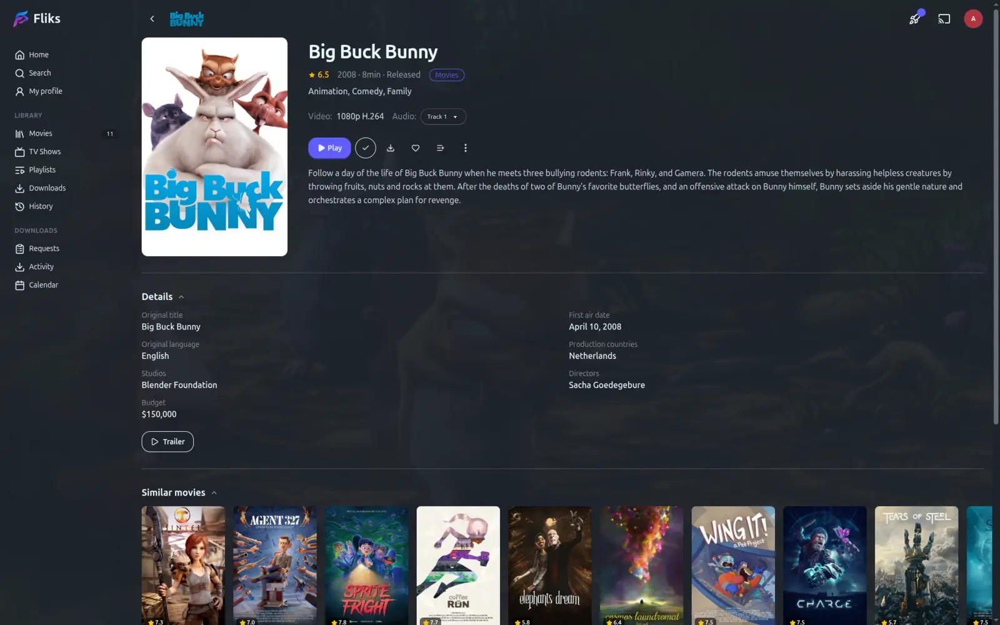
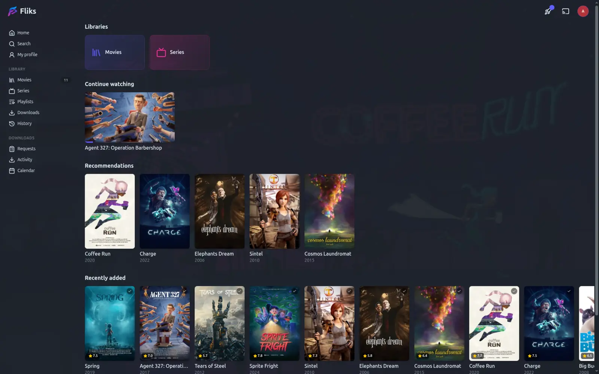
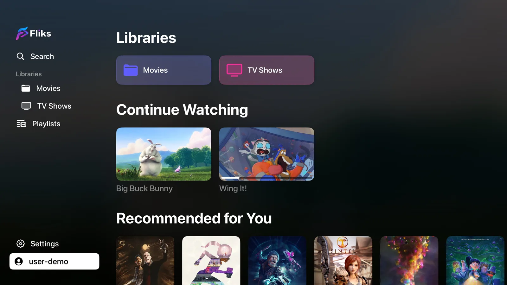
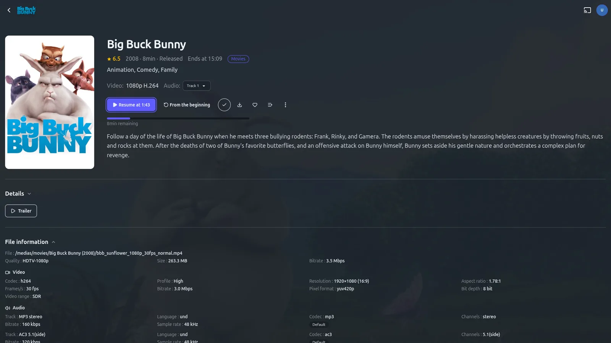

Your personal video collection, on every screen in the house.
Point Fliks at the folders where your films and shows live. It handles the rest: covers, synopses, cast, seasons and episodes, laid out like the apps you already use. This library is entirely yours.
- License
- AGPL-3.0
- Client platforms
- 10
- Hosting
- Your hardware

Everything a streaming night needs
A full streaming service for the whole household, running on hardware you already own.
Watching
Adaptive streaming
Quality follows the bandwidth without a hiccup, or lock a bitrate by hand when you would rather decide.
Resume anywhere
Start on the phone, finish on the TV. The position syncs live.
Every track, switchable mid-playback
All embedded audio renditions, all embedded and external subtitles, with your choice remembered per show.
Subtitles found for you
A video with none? Fliks goes looking on the usual subtitle sites and picks the one that actually matches your copy.
Out of sync, fixed in one click
Fliks listens to the dialogue and slides the subtitles back onto it. No hunting for the right offset.
Translated on demand
Nothing available in your language? Translate a track you do have. The result is saved next to the video, so it is only done once.
Skip intro, next episode, chapter markers
Thumbnail previews when you scrub, and a rewind buffer for live TV.
Live TV
Add an M3U playlist or an Xtream account. Channels line up next to your library, with a program guide.
Browsing
Several libraries side by side
Movies, shows, home videos, kids. Each pointed at its own folder.
Search across all of them
Filter and sort by status, date added, rating, runtime.
Rich metadata
Posters, fanart, genres, cast and crew. Every person gets a page listing their work in your libraries.
Home rows
Continue Watching, Recently Added, and recommendations weighted by what you actually watched.
Spoiler protection
Blurs the synopsis and thumbnail of anything you have not watched yet, and hides episode titles that give the plot away.
Sharing with the household
Recommend something to someone
Pick a film or a season and send it to another user. It shows up on their home page with your name on it.
Playlists
Your own running order, drag to reorder, autoplay from one item to the next.
Shared playlists
Invite other users as viewer, editor or admin and build one together.
Downloads that keep themselves current
Set a playlist to automatic: what you have not watched is downloaded to the device, what you have watched is removed. Nothing to think about before a trip.
Running the show
Multi-user
Each with their own history, progress and preferences.
Quick Connect for TVs
Pick your profile on the TV, approve it from your phone. No password to type with a remote.
Live transcode dashboard
For admins: who is watching what, at which quality, on which hardware path, and why.
Images cached locally
No hotlinking to external services while you browse.
See it in action
A quick look at the interface, on the web client.

Built for the living room
Apps for Apple TV, Samsung, LG and Android TV, made for a remote and a couch.
Apple TV

Samsung TV

Plugins
Fliks ships with no way to acquire media. You install what you want from Settings > Plugins.
The Download plugin
Brings indexer search, download-client management and the grab pipeline. Install it and it appears in the interface.
Signed archives
Every plugin archive is signed, and the signature is checked before anything is written to disk.
Isolated by design
A data plugin ships JSON and executes nothing. A process plugin runs under its own uid, with its own database schema. It cannot reach another plugin's tables, or yours.
Part of the interface
Plugin pages, menu entries and settings appear where they belong, and follow your permissions like everything else.
Everywhere you watch
Start a film on your phone and finish it on the TV. Your place follows you.
Server
Docker, a Windows tray app, a macOS menu-bar app, or from source.
Clients
Web, iOS, Android, Android TV, Apple TV, Samsung TV, LG TV, desktop, Chromecast, Nintendo Switch.
Get started in 2 minutes
All you need is a folder with your videos.
Docker, the recommended way
Download the compose file
curl -LO https://raw.githubusercontent.com/fliks-app/fliks/main/docker-compose.example.ymlmv docker-compose.example.yml docker-compose.ymlSet your media path and passwords, then start it
docker compose up -dWindows and macOS installers are on the releases page.
Why self-hosted
The library is yours, and so is the machine it runs on.
Your data stays home
No account to create, no subscription, nothing leaves the house.
Free and open source
AGPL-3.0-or-later. Read the code, change it, run a modified version.
No catalog to lose
Your files, your metadata, your history. Nothing disappears because a license expired.
Runs on what you have
A NAS, a spare machine, a home server. Hardware transcoding when the machine offers it.
Open source, built in the open
Every change, every release and every discussion happens on GitHub.